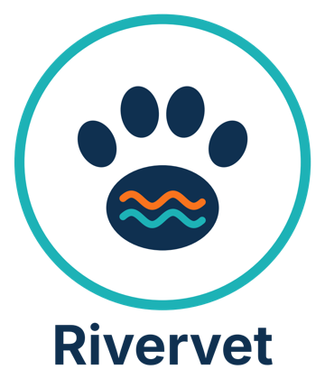

Citas, historial y recordatorios en un solo lugar
Rivervet es un sistema web para clínicas de 1 a 5 profesionales. Deja el papel y el Excel, ordena la agenda y avisa a los dueños por WhatsApp para que no olviden la cita ni la vacuna.

Lo que pasa hoy en una clínica pequeña
Información dispersa
Fichas en papel, hojas de Excel y chats distintos. Se pierden datos y se cruzan los horarios.
Citas y vacunas olvidadas
Cuando el dueño no recibe un aviso, queda un hueco en la agenda y la mascota llega tarde a su vacuna.
Recetas que se pierden
Los dueños extravían la receta o confunden la dosis, porque nadie les dejó las indicaciones a mano.
Lo esencial, bien hecho
Empezamos pequeño para validar con clínicas reales antes de agregar más.
Incluye
- Agenda de citas con vista semanal
- Historial clínico básico por mascota
- Recordatorios por WhatsApp con confirmación del dueño
Por ahora no incluye
- Facturación
- Inventario
- Pagos en línea
- App móvil
Una cita en Rivervet, de principio a fin
- Recepción agenda la cita.
- El sistema envía el recordatorio por WhatsApp.
- El dueño confirma o reprograma.
- El veterinario registra la atención en el historial.
- El dueño recibe la receta y las indicaciones en su teléfono.
Una suscripción mensual simple
Tres planes pensados para el bolsillo de una clínica pequeña.
Plan 1
Plan 2
Plan 3
Precios referenciales del proyecto, sin IGV. Se confirman durante el piloto, junto con lo que incluye cada plan.
Pruébalo 4 semanas en tu clínica
Medimos si los recordatorios por WhatsApp reducen las citas perdidas. Tu opinión define cómo mejora el sistema.